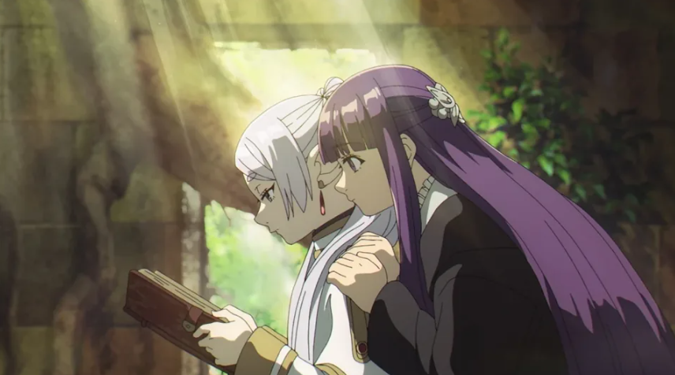

Confira a Notícia:
Em setembro de 2023 foi lançado um anime de fantasia que vem fazendo um sucesso estrondoso e destronou o quase insuperável Fullmetal Alchemist: Brotherhood. Frieren: Uma Jornada para o Além (Sousou no Frieren) é um anime de fantasia que traz a poderosa e milenar maga Frieren como protagonista.
Na produção acompanhamos a aventura da nossa protagonista, a também maga Fern, o guerreiro Stark e o clérigo Sein, que formam um grupo completamente desequilibrado e cômico. A jornada do grupo lembra muito uma campanha de RPG, por isso esse anime pode ser perfeito para os fãs de D&D e Baldur’s Gate 3. Sempre vemos o grupo realizar “quests” em povoados para receber dinheiro, recompensas, grimórios de magia, etc.
No entanto, esse não é o primeiro grupo e jornada que Frieren faz. Anteriormente, a elfa maga, que na verdade tem mais de mil anos, é uma verdadeira lenda e uma das responsáveis por matar o Rei Demônio, trazendo uma longa era de paz. Porém, ela não fez isso sozinha, ela conquistou esse feito ao lado do herói Himmel, o clérigo Heiter, e o guerreiro Eisen. A nova jornada, contudo, não é mais para matar o Rei Demônio, mas sim para achar o Além, local onde as pessoas vão após a vida. Vemos Frieren, Fern, Stark e Sein partirem rumo a esse destino desconhecido e longínquo. Contudo, essa tarefa obviamente não é fácil.
Uma das maiores ameaças deste universos são os demônios, seres vis, alguns deles com aparência humana, enquanto outros são apenas monstros com chifres que não possuem uma única partícula de bondade dentro de si. Frieren nos dá algumas demonstrações de poder em lutas estarrecedoras como o confronto com Aura, uma poderosa demônia, que possui uma quantidade de mana impressionante, mas que é extremamente soberba e menospreza o poder de Frieren. No entanto, a nossa maga usa uma habilidade que deixa o seu verdadeiro poder escondido e quando ela revela a sua verdadeira mana. É algo imensurável e impressionante.